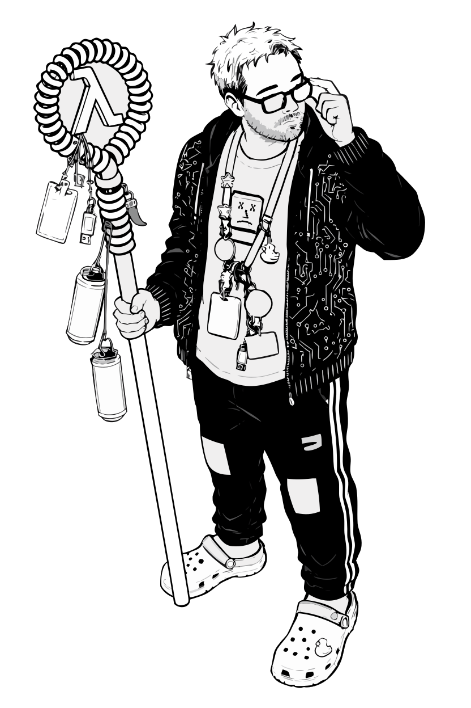

Justin Barnard
Character Name ✦✦✦✦✦✦✦
Last Responsible Adult
Class & Lvl ( ) ✦✦✦✦✦✦✦✦✦
Human (Overclocked)
Species ✦✦✦✦✦✦✦✦✦
Exhausted Neutral
Alignment ✦✦✦✦✦✦✦✦✦
Passive
Active
HP
AC
Speed
Character Stats ✦✦✦✦✦✦✦✦✦✦✦✦

Offline
10727632